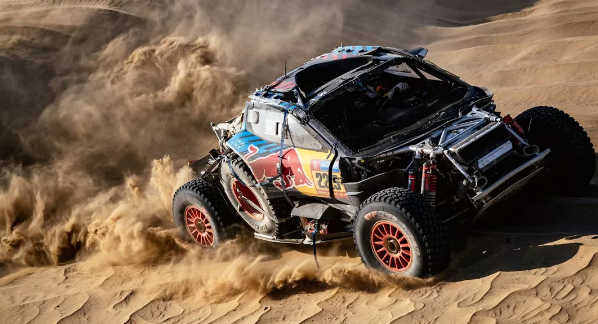
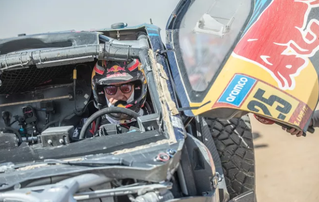

Kejutan besar mengguncang ajang Reli Dakar 2025. Juara bertahan, Carlos Sainz Senior, secara mengejutkan harus mundur dari perlombaan akibat kerusakan parah pada mobilnya. Insiden ini terjadi pada tahap awal reli dan menjadi pukulan telak bagi pembalap veteran asal Spanyol tersebut.
Mobil Ford Raptor yang dikendarai Sainz mengalami kecelakaan saat melintasi medan pasir yang menantang. Akibat insiden tersebut, roll cage atau rangka pelindung mobil mengalami kerusakan parah. Sesuai dengan regulasi keselamatan FIA, mobil yang mengalami kerusakan pada bagian vital seperti roll cage tidak diperkenankan melanjutkan perlombaan.
"Karena kerusakan yang terjadi pada roll cage pada mobil #225 (Carlos Sainz dan Lucas Cruz) setelah kecelakaan di sesi pertama tahap krono 48 jam Reli Dakar 2025 dan sesuai dengan peraturan FIA, maka kami putuskan untuk menarik kendaraan tersebut," demikian pernyataan resmi tim Ford.
Mundurnya Sainz dari Reli Dakar 2025 tentu menjadi kehilangan besar bagi ajang balap paling ekstrem di dunia ini. Sebagai juara bertahan dan salah satu pembalap paling berpengalaman, Sainz selalu menjadi favorit untuk meraih gelar juara.
Kegagalan Sainz ini juga memberikan peluang bagi para pesaingnya untuk merebut tahta juara. Pembalap-pembalap seperti Nasser Al-Attiyah, Yazeed Al-Rajhi, dan lainnya kini memiliki kesempatan yang lebih besar untuk meraih podium tertinggi.
Tim Ford pun merasa sangat kecewa dengan insiden yang menimpa Sainz. Mereka telah melakukan persiapan yang sangat matang untuk menghadapi Reli Dakar 2025. Namun, nasib buruk harus dialami oleh Sainz.
"Kami sangat sedih harus mengakhiri perjuangan Carlos di Reli Dakar tahun ini. Ia adalah pembalap yang luar biasa dan kami sangat menghormatinya," ujar seorang perwakilan tim Ford.
Meskipun harus mundur, Sainz tetap menunjukkan sikap yang sportif. Ia mengucapkan terima kasih kepada tim dan para penggemar yang telah mendukungnya. Sainz juga berjanji akan kembali lebih kuat pada tahun depan.
Mundurnya Sainz dari Reli Dakar 2025 menjadi pengingat bahwa ajang balap ini penuh dengan tantangan dan ketidakpastian. Sekuat apapun seorang pembalap, mereka tetap rentan terhadap insiden yang tidak terduga.
Dengan mundurnya Sainz, persaingan di Reli Dakar 2025 dipastikan akan semakin sengit. Para pembalap akan berjuang habis-habisan untuk meraih gelar juara yang ditinggalkan oleh Sainz.erlukan pada Ford Raptor-nya.